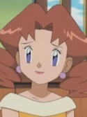

|
Articuno |
- Pokemon Movie 2: The Power of One
|
Articuno is a legendary Pokemon from the Kanto region. Articuno, along with Zapdos and Moltres, is a member of three Legendary birds of Kanto. According to legend, it appears before doomed travelers lost in icey regions. |
|  |
Caroline |
- Pokemon Advanced Generations
|
Carolina is the mother of May and Max. She is also the wife of Noland. She is cheerful and positive woman but can be upset and suspicious. |
 |
Eevee |
- Pokemon
- Pokemon: Pikachu's Rescue Adventure
|
Eevee is a Pokemon from Kanto region. Eevee is a quadruped creature with primarily brown fur. Eevee has an irregularly shaped genetic structure that allows it to adapt to many different kinds of environments. Yumi Touma voiced Sakura's Eevee. |
 |
Espeon |
- Pokemon
- Pokemon Chronicles
|
Espeon is a Pokemon from Johto region. Espeon is one of the Eevee evolve forms. The gem on Espeon's head boosts it's psychic powers to protects it's trainers. Yumi Touma voices Sakura's Espeon. |
 |
Jigglypuff |
|
Jigglypuff is a Pokemon from the kanto region. Jigglypuff is evolve form of Igglybuff. It's eye are mesmerize opponents and will inflate it lungs. It able to sing lullaby and makes people fall asleep. Yumi Touma voiced Marina's Jigglypuff. |
 |
Spinel Sun |
- Cardcaptor Sakura
- Cardcaptor Sakura: Clear Card Prologue
|
Spinel Sun is the cat-like magical guardian created by Eriol Hiiragizawa as counter part to Kero-chan. His true form is a winged black panther, while his flase form is similar to a small winged cat. He spends most of time reading book and has a calm demeanor. He is a monster when he is fed sugar. Yumi Touma voiced Spinel Sun's false form. |